-
07/17/2026
On Saturday we leave for Roswell, NM. We are driving from Chicago to New Mexico over the weekend, exploring parts of Route 66 in the process. It's an 18 hour drive heading west across the most beautiful country on Earth. We plan on staying at least two weeks to get the house set up. The itinerary below was made using Microsoft Street & Trips 2000.
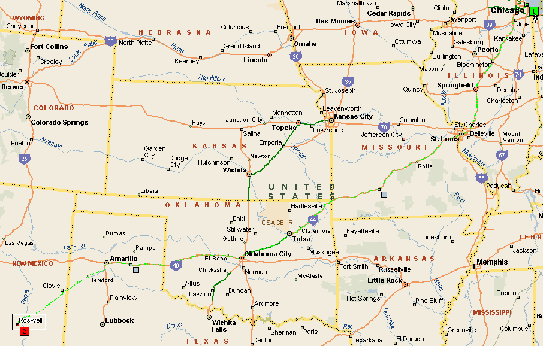
-
07/11/2026
Today was Preston's graduation party. We spend two entire days setting up the backyard, and cleaning the inside of the house. Invitees included family and close friends. Autumn catered Jewel Osco chicken, and made a variety of salads and side dishes.
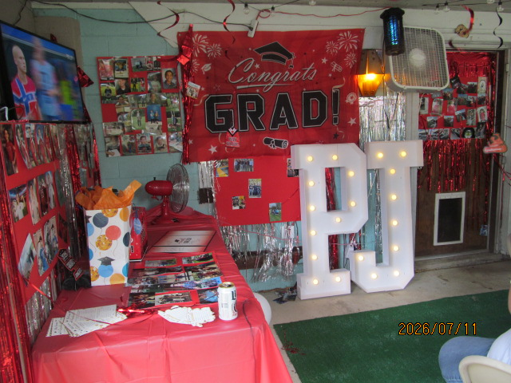
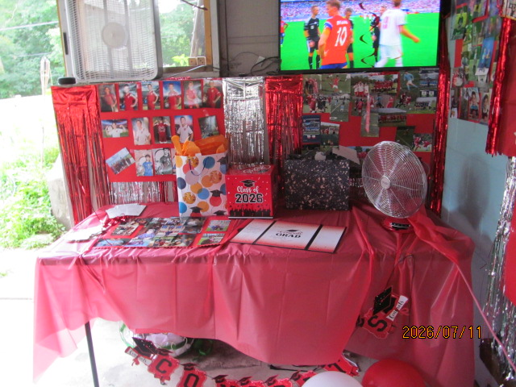
-
07/03/2026
So we did a thing today. My wife and I purchased a fixer upper in Roswell, NM in hopes of opening our very first 90's & Alien themed Airbnb. Roswell, NM is known for its alien and UFO enthusiast tourism built around the infamous 1947 crash. We plan on leaving as soon as we close on the property to get things in order. To say that I'm excited would be a massive understatement.
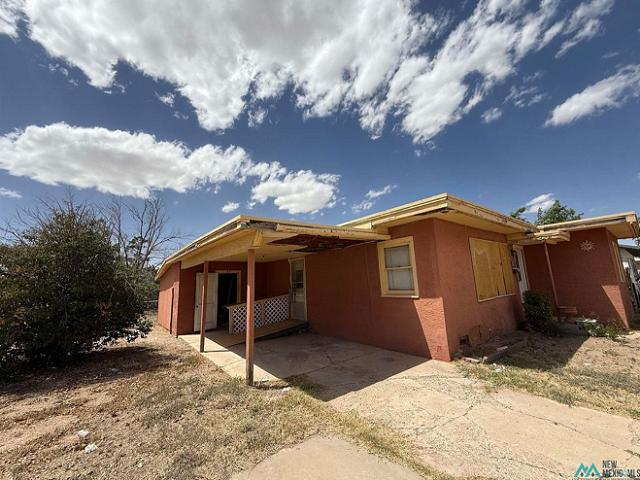
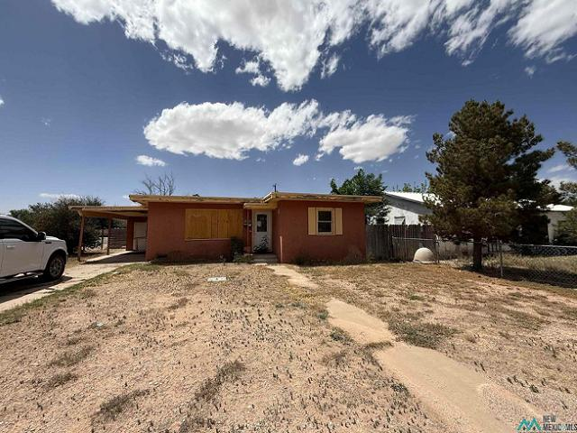
-
06/24/2026
We went to Bingo with our son Preston and his girlfriend Rylee. Preston just turned 18, so it was his first time enjoying the excitement of a bingo night. None of us won anything, but we still had a good time nonetheless. The kitchen served lasagna which was suprisingly decent, we also brought some Ripples, french onion dip, Pringles, mnm's, and Raisinets.It started pouring as we walked out and we got soaked.
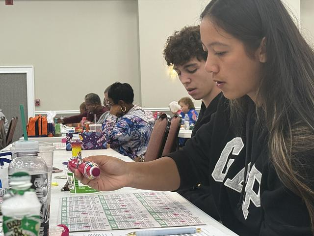
-
06/23/2026
It's that time of the year again. My son Vincent is leaving today. He is flying to France to visit his grandparents. It doesn't get easier and I miss him already. Vincent is the reason why this office exists in the first place. Two years ago, I took him thrifting for his birthday and he became mesmerized by this tube TV he got for $5. That's when I got the idea for the office. The thing about Vinny is that you feel like a better person just by being in his presence. He is the kindest and purest soul I have ever met. His positivity and enthusiasm radiate across towns, he got all his cousins to join his podcast, one of many ventures. He also has a YouTube channel @vincentsurprise he has been running since he was 6, and a tiktok account Grinnie Eats where he reviews fast-food restaurants with his cousin Grace. I could share so many more amazing stories about Vincent, but I would need an entire web page.
-
06/21/2026
Today is Father's Day, and my wife and kids surprised me with the coolest gift: The Official Guide to the X-Files. It's an original from 1995, and I totally love it. At that point, the X-Files had only been on the air for three seasons but it goes to show how quickly it became a hit for Fox. My wife also cooked an awesome breakfast which consisted of bacon, sausage, eggs, and pancakes. Today was a great day.
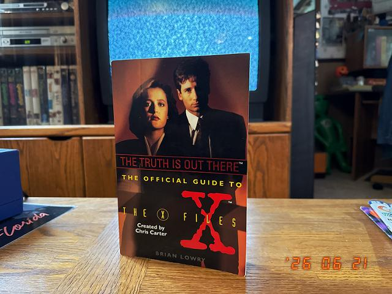
-
06/18/2026
I decided to install a second landline phone in the office, I received this cool brand new GE headset phone a couple of weeks ago but the battery was shot. I ordered a new battery, and it now works great. I installed it next to the answering machine and caller ID for now. The landline cord is split between the tow phone so that when I get an incoming call, both phones ring. Eventually, I would like to move the headset phone to my computer desk, I think that would make more sense.
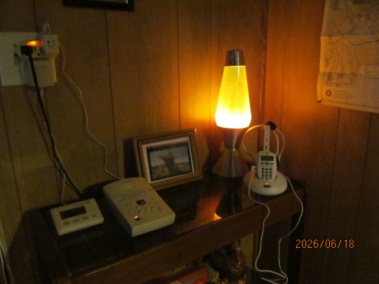
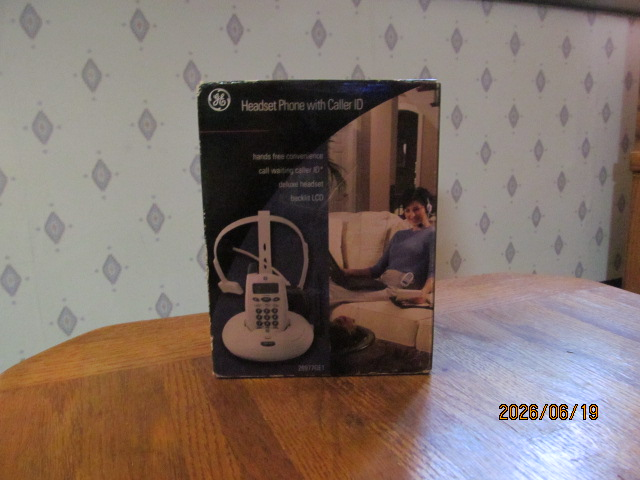
-
06/15/2026
The great flood of 2026. I never had so much water get in my basement, then again, we've had almost ten straight days of rain and thunderstorms. Water got under the carpet padding which I had to pull and dry using a variety of fans. It's all put back together now, but they're forecasting heavy rain again on Wednesday.
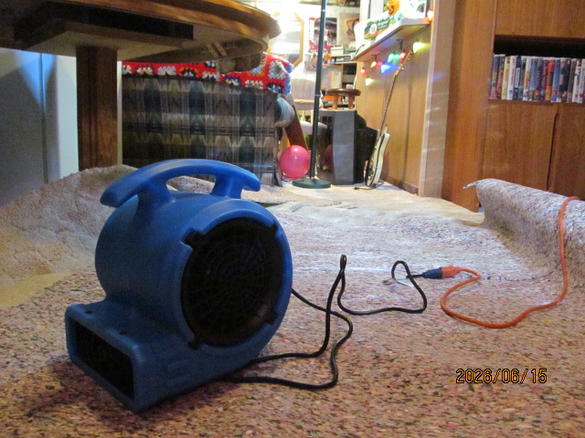
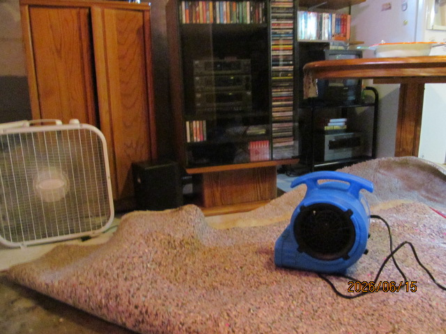
-
06/14/2026
Time marches on and continues to take everything I've built. It's not enough that Preston graduated two weeks ago, Vincent got his learner's permit yesterday. He wanted to drive right away, so we drove to Aldi since we needed to get groceries for my niece's birthday party. This is a picture of him the next day at the Starbucks drive-thru.
-
06/08/2026
I purchased a new DVD player for my kitchen TV. I needed a player small enough to fit on the counter and not take unnecessary space, but also cool enough that it would have its place in my office. I went with the Sony DVP-PQ1 which fits all the requirements.
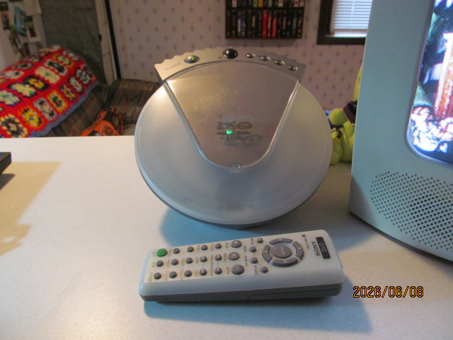
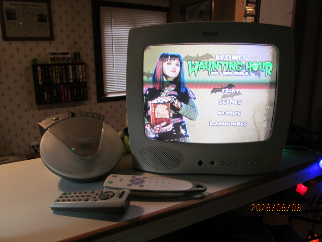
-
06/05/2026
We hung out in my office tonight, I played Mario Kart on the Gamecube with Vincent and Preston, while my wife was working in the dining area. Vincent has improved a lot at Mario Kart, he's even managed to beat me once. We also played Mavis Beacon which my wife won handily.
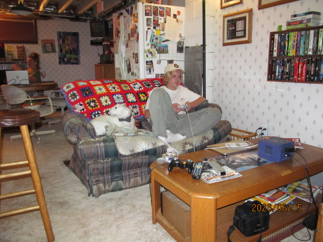
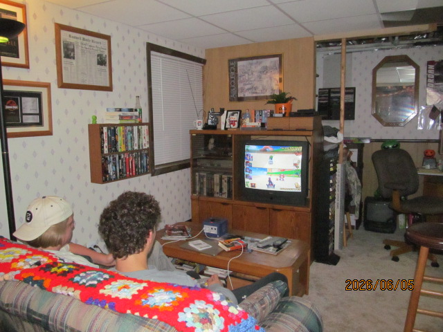
-
06/05/2026
It's Friday, another week gone by. Today is a slow day, I'm reviewing my GC-161 model to unwind from a long week.
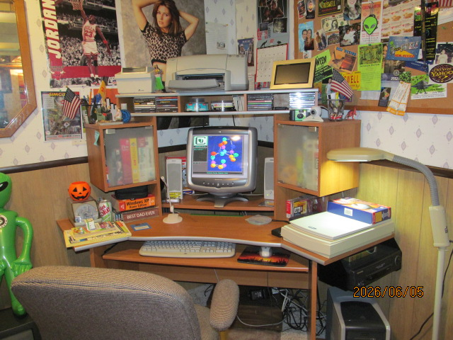
-
06/05/2026
I received my brand new GE cordless phone in the mail today. It's nice to be able to walk around while I'm on the phone without having to worry about the cord getting tangled. I mounted it on the wall where the previous phone was.
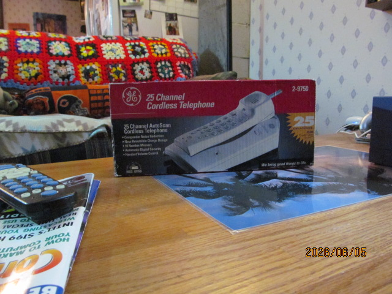
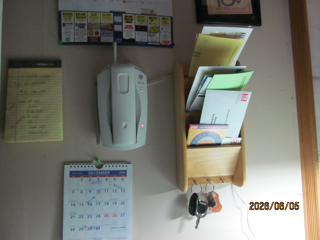
-
06/02/2026
It's a wrap for my son Preston who graduated High School today. It feels a bit unreal and it's hard to express exactly how I feel about today. I knew this day would come, but I don't think I was fully prepared for it. Either way, I can't stop it, and time will continue its cruel mission to take everything from me. More importantly though, Preston was not bothered by the fact that he would never step foot in that school again. He was happy, and I should be happy too. Congratulations Preston!
-
06/01/2026
This is my car, a GMC Yukon 5.3L with 260K miles on her. No check engine light, recently passed emissions, she is more reliable than the Nasa's space shuttle. With seven seats, she has seen more road trips than a gipsy wagon. I love this car, she is the ultimate embodiment of American suburbia, and I plan on driving her for a very long time.
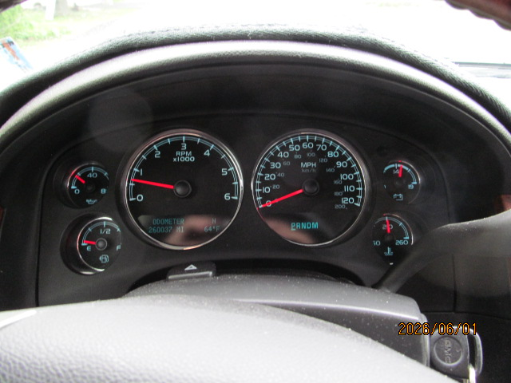
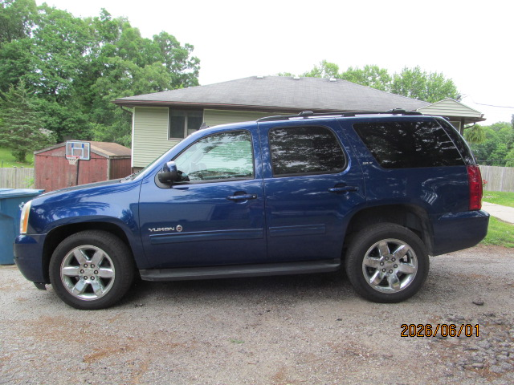
-
06/01/2026
If ever there were a TV show that successfully captured the late 90's essence, Ally McBeal is that show. The plot revolves around Ally, a quirky lawyer who works at a Boston law firm. The whole show's aesthetic, in my opinion, resembles that of a global village coffee shop atmosphere, which gives it a warm, 90's fall visual. So, of course when came the opportunity to own a VHS tape of two Ally McBeal episodes that were submitted for an Emmy back in 2000, as well as the second CD soundtrack from the show, I jumped at the chance. Pictured below are the two artifacts in question.
-
05/29/2026
I picked up a cool PC program today from a local store, Flow Charting 4. It allows its users to design flow charts and diagrams and save them as images or print them.
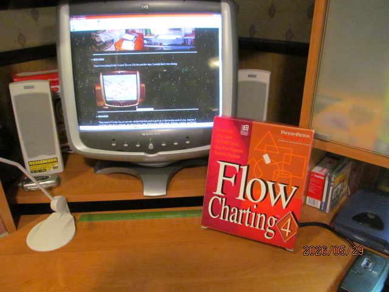
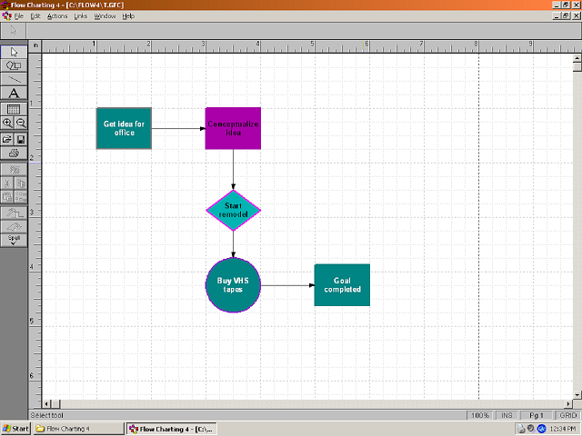
-
05/28/2026
Today is Preston's last day of high school, and it has been emotional to say the least. As parents, we've dedicated the past 18 years of our lives making sure his homework gets done and his grades are good. That all ends today and I can't help but feel like the older my children get, the more irrelevant I become in their lives. Preston will be attending Purdue West Lafayette in the fall to study either Physical Therapy or Finance.
-
05/21/2026
Vincent has his passport appointment in the city tomorrow. He has filled out all the paperwork on his own and gathered all the required documents. Today he needed to make copies of his mother's ID as well as a few other documents. The upstairs printer was out of ink but thankfully the old HP Deskjet 932c still had some life in her. I think it was the first time I've used both my scanner and printer at the same time and with a real purpose in a long time. I actually was amazed that it was still all working and to be able to use this technology again felt great.
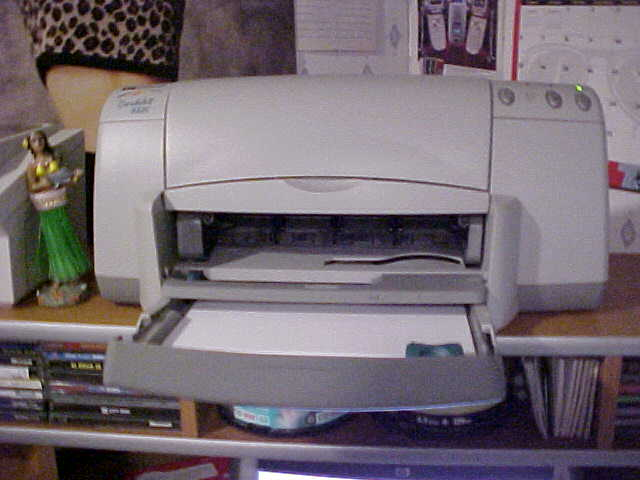
-
05/21/2026
I have been playing Roller Coaster Tycoon 2 for the past few days, I actually find it very relaxing.
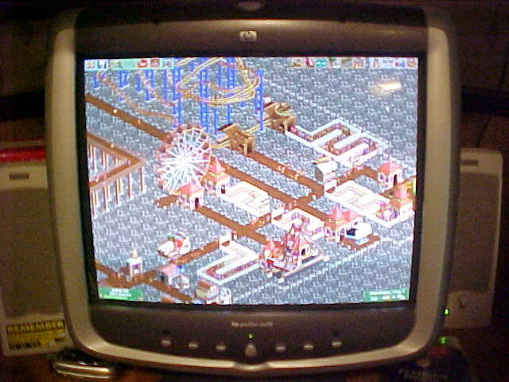
-
05/16/2026
Vinny turned 15 today. I'm not sure who decided that kids need to grow up so fast but this needs to stop. Anyway, I took him to the city to celebrate, we went to Zara, Levis, Build-a-bear, Shake Shack, Hollister, Addidas, and Trader Joes. We had a great time, then went home where we had some people over. Here is a picture of Vincent with his cousin Gracie at Shake Shack.
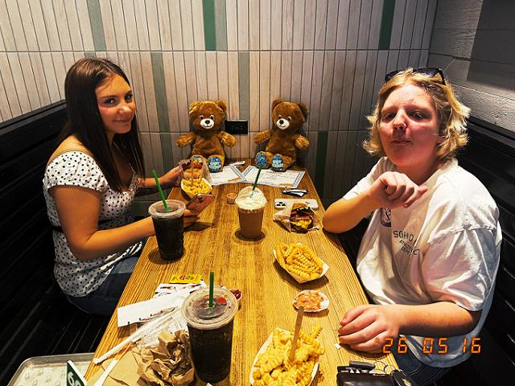
-
04/24/2026
I bought this program that adds 15 fonts to Windows XP. I figured I might be able to use some of them for this web page. Most of them actually look really cool.
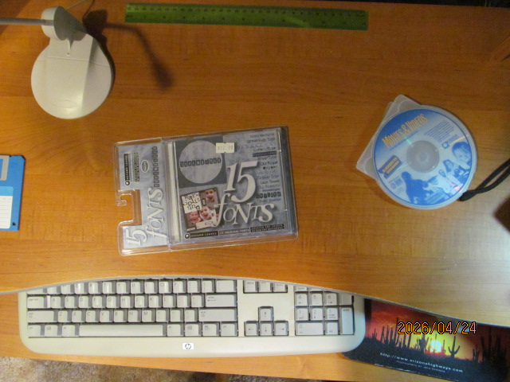
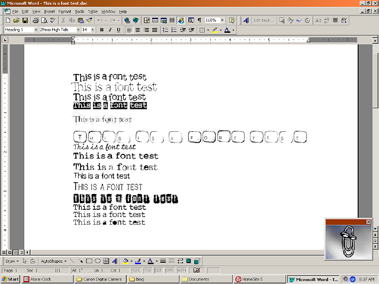
-
04/20/2026
The VCR I was initially using completely stopped working and ate one my tapes. I replaced it with a different model I had in storage. It's now back to a functioning state.
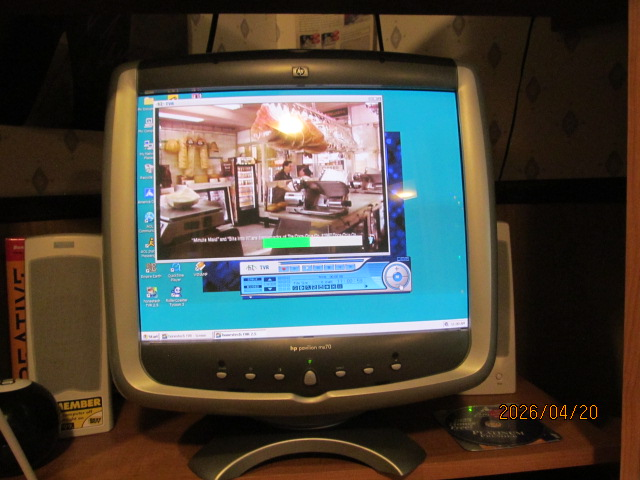
-
04/18/2026
Today is Preston's senior prom, he took his girlfriend Rylee pictured below. This picture was taken at the high school during the grand march.
-
04/17/2026
I just finished setting up my new VCR capture workstation which allows me to play and record VHS tapes directly on this computer. I used a VCR mount that I bolted to my computer desk. The VCR in this picture was originally not working and eating all my tapes. I had to open it up and clean the laser lens, it's been working fine since.
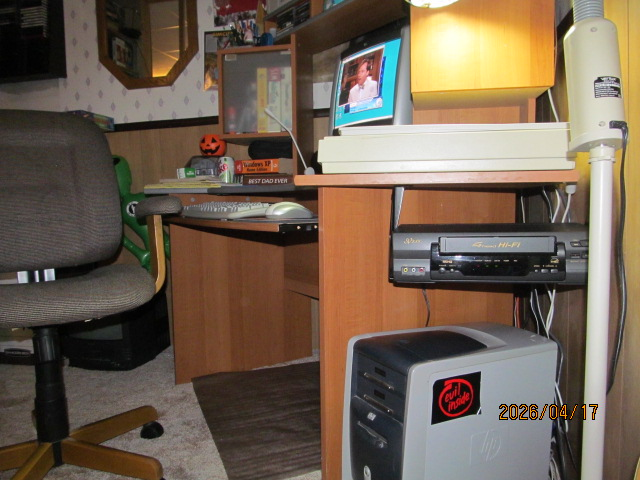
-
04/16/2026
Still haven't fixed the date on my camera but here are two pictures of my office from a slightly different angle. My son Vincent is seen standing in the first picture.
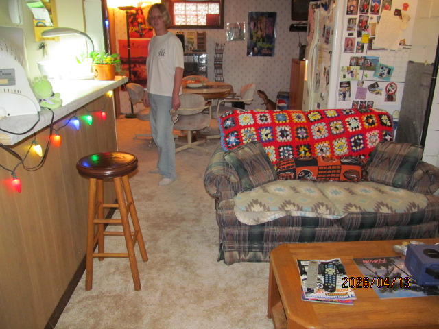
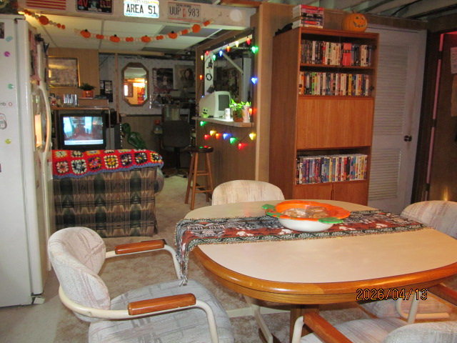
-
04/12/2026
My beautiful wife surprised me at the office today. She usually works on four screens, unfortunately my dining table was not prepared to accommodate such technology. Nevertheless, she has been making the best of it, but I know deep down she misses that fourth screen. Anyway, taking this picture has made me realize that the date stamp on my Canon digital camera is off by one day, I will fix it today, or should I say yesterday?
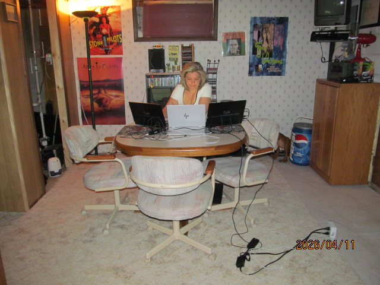
-
04/11/2026
My son Vincent and I were at my niece's cheer competition when he asked me if we could go to Staples which apparently has become a trendy place. In any case, I am glad to see that Staples still carries blank CD's and DVD's, as well as CD jewel cases. We went to Taco Bell and Casey's afterwards.
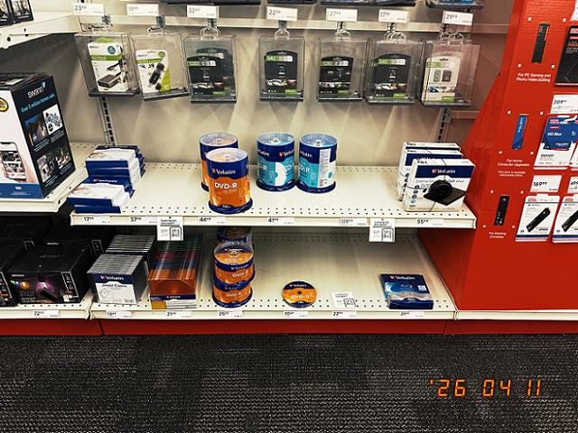
-
04/06/2026
I found a brand new lamp identical to the one I have only brand new and never opened. I installed it on the counter top to replace the old one. I think it looks awesome.
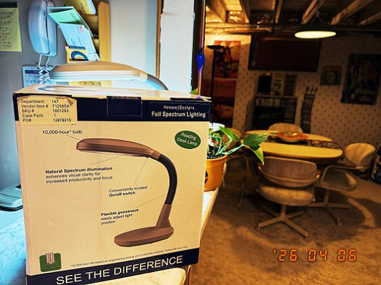
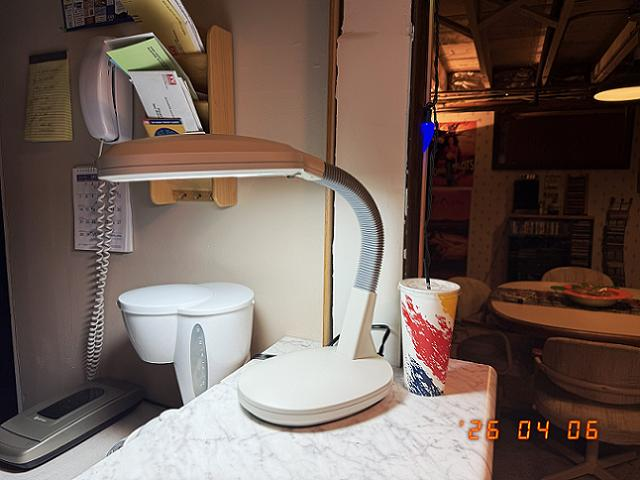
-
04/01/2026
We happened to be in Florida for the historical Artemis II rocket launch, so we drove up to Cocoa Beach to witness it in person. The beach was packed, and it took us almost an hour to drive out of there but it was a pretty cool experience.
-
03/27/2026
A show I had completely forgotten about was on the TV a few days ago, and it's a wild ride. The Odyssey (1992) tells the story of Jay, a kid who fell in a coma and gets transported to a post-apocalyptic alternate reality called the Downworld, while his mom and friends try to wake him up in the Upworld. I have fond memories of watching this show when I was a kid so I rewatched the whole thing and I can definitely say that they don't make shows like this anymore. Contrary to popular belief, the show does not take place inside Jay's head. We get clues throughout the series that the Downworld is some sort of parallel universe:
- Medea, a character from the Downworld, is shown as another coma patient in the Upworld
- Donna, Jay's best friend, dreams of Jay in the Downworld
- Jay's dad seems to have vanished in the Downworld himself years ago
- The Downworld has a structure and hierarchy with clubs and factions that are independent of Jay
-
03/18/2026
Finished carpeting the office today. It took me hours moving the furniture back in, and I still need to clean the other side of the basement. Nevertheless, I think it looks great and I am very happy with it.
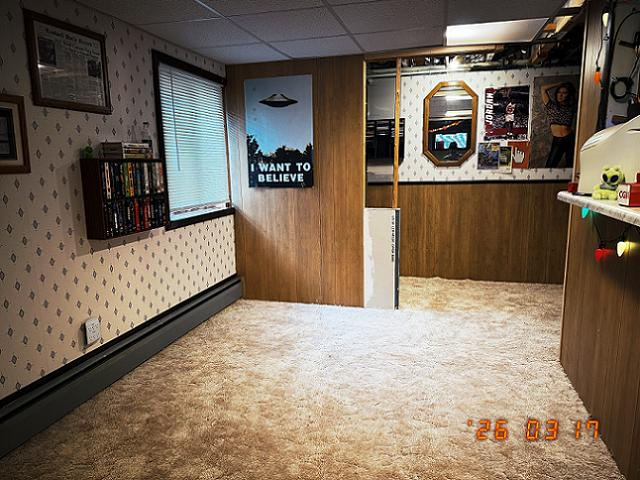
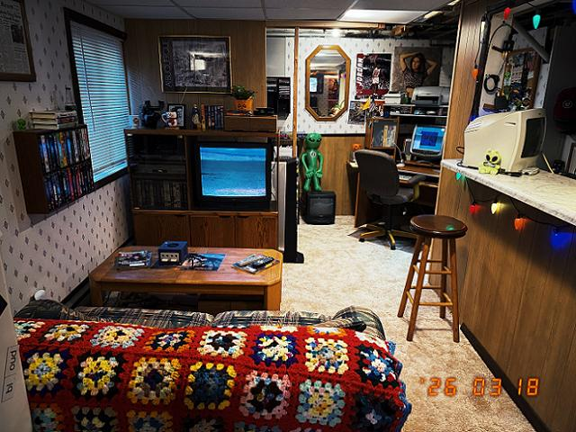
-
03/13/2026
I set up my new HP Pavilion mx70 monitor and I am happy with the results. It matches my computer tower which is a HP Pavilion 533w. My son Vincent thinks it looks really cool.
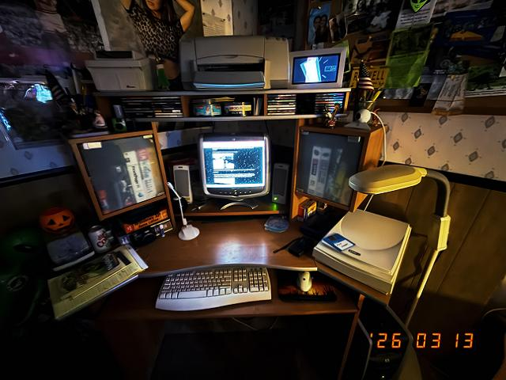
-
03/11/2026
Today is Preston's 18th birthday. Where do I start? It seems like just yesterday we were playing with dinosaurs, and watching Disney movies. I had hoped somehow this day would never come, that maybe it was all a lie and that children don't grow old and leave their parents. I was only 21 when you were born, I was scared and lost, but you showed me the way. You gave me a reason to get up in the morning and be a better person. So while I spent those past 18 years worrying, I know that you have a bright future ahead of you. Happy Birthday Son, I love you and I am proud of you, Dad.
PS: The carpeting had to wait due to thunderstorm and scared neighbor.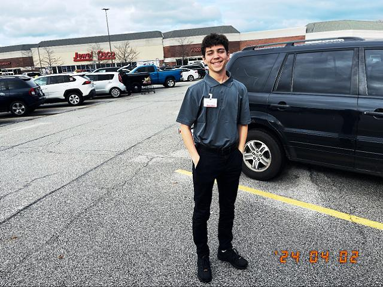
-
03/10/2026
I am installing new carpet in my office next week, and I have to move all the furniture out of the way. That includes my desk and computer. As a result, this blog will not be updated until the carpet installation is finished. Pictured below is the carpet I am going with. It is a beautiful brand new sculptured carpet, and I am very excited to see the end result.
-
03/08/2026
This roughly replicates my office layout. I use The Sims whenever I want to visualize what a future project might look like. In this case, my next project is carpet, and since I have to move everything out of the office to lay the carpet, I figured I would explore different layout options. Using The SIms, I can move the furniture around, rearrange the room as I please, and see what works and what doesn't. I guess you could say I'm an architect. If web design, GIFs, and site maps ever go out of style, I know where to go next.
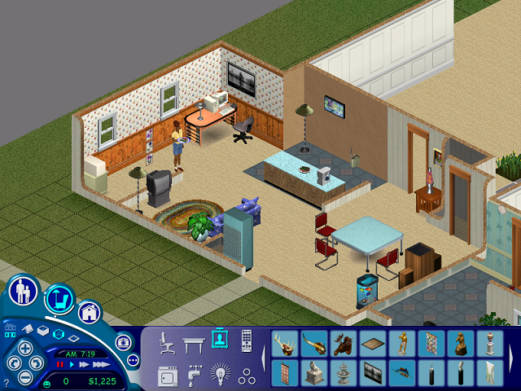
-
03/06/2026
I just finished my GC-161 molecule synthesizer. GC-161 is a miracle drug being developed by George Mack, head researcher at the Paradise Valley Chemical Plant, under Danielle Atron's leadership. You can access the model by clicking this link.
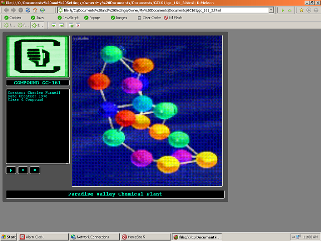
-
02/28/2026
Both Vincent and Preston played Roller Coaster Tycoon 3 today. They each have vastly different styles. Preston goes right in and builds one ride after the next while Vinny will start decorating the park with trees and fences before ever building a single ride. Personally, I love both styles as they are a reflection of my children's uniqueness and individuality.
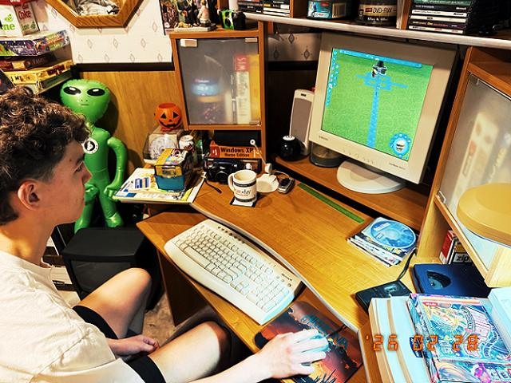
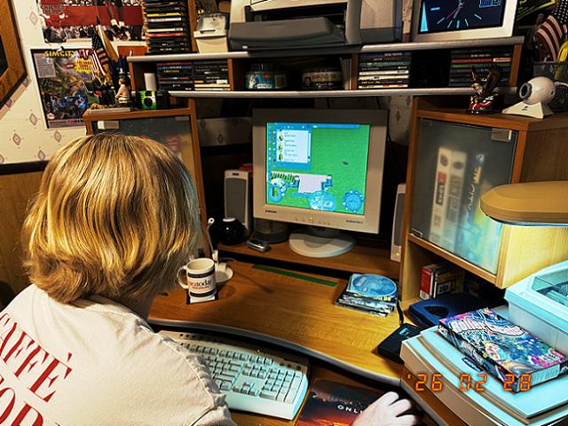
-
02/28/2026
I recently received this sticker in the mail, and now I am stuck as I can't decide where to put it. I initially wanted to put it on my fridge, but what if my fridge goes out? Then I thought, maybe on my computer tower, but what if that goes out? Unable to make a decision, it is pinned on my bulletin board for now.
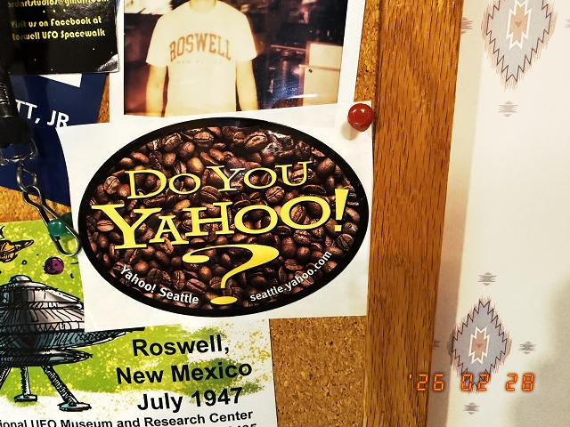
-
02/28/2026
I purchased PC game Roller Coaster Tycoon 3 which is one of my favorites. I haven't had time to install it yet but I think today is the day. My son Preston also loves this game, we spent hours building the perfect parks only for all of our guests to end up at the pool. This time, I will build the pool at the very back of the park.
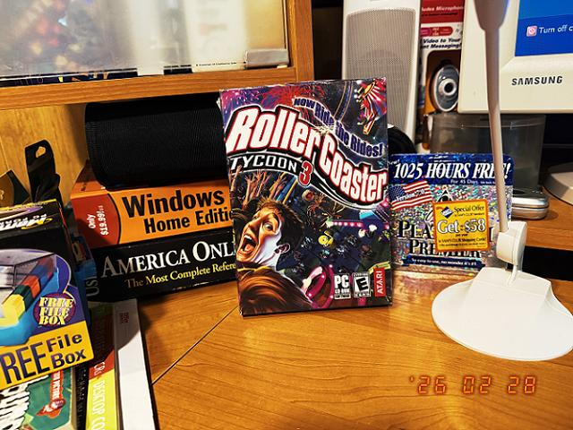
-
02/27/2026
I have a daily night time ritual which consists in cleaning my coffee maker and turning off all the lights in my office one by one. I can then enjoy this million dollar view which soothes and heals my soul.
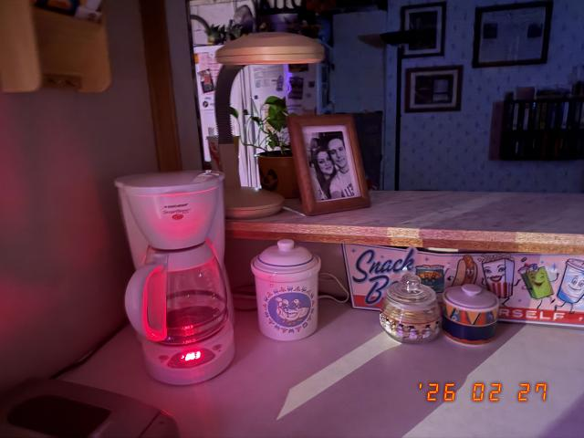
-
02/24/2026
Just finished adding a caller ID to my landline phone. The "AT&T Call Display 325" displays incoming call information and is capable of storing the last 99 incoming calls. I bought the same brand as my answering machine to maximize compatibility.
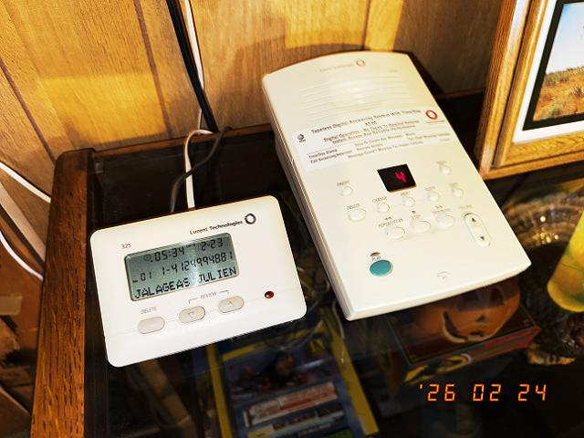
-
02/24/2026
Today, I am setting up my new coffee maker. It was time to replace it so I decided on a Black&Decker SmartBrew Plus DCM2500. It comes with great features such as the ability to program it, a digital clock and the Sneak-a-Cup function, which allows you to pour yourself a cup while coffee is still being brewed. I found this particular model in a Consumer Reports magazine and I am not disappointed.
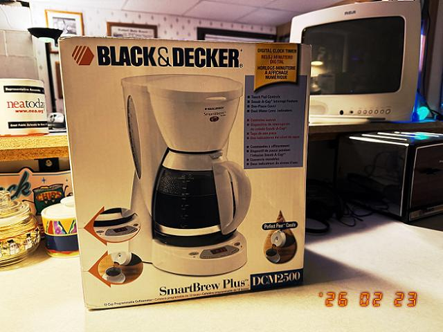
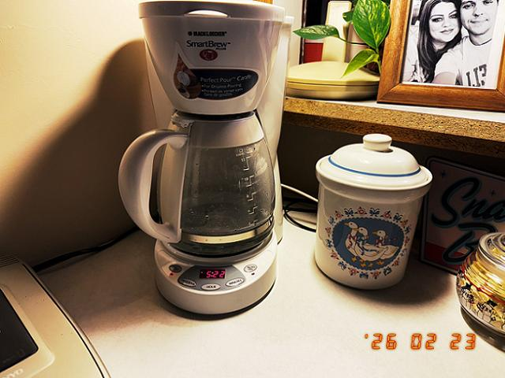
-
02/23/2026
I have accumulated various types of software over the years. They each have a purpose that cannot be fulfilled by any other tool. FrontPage98 is used for web design, WordPerfect can open document extensions that Word 97 cannot. TaxCut by H&R Block also comes in handy this time of year, while Cinemania 96 offers countless movie reviews by renowned critic Roger Ebert.
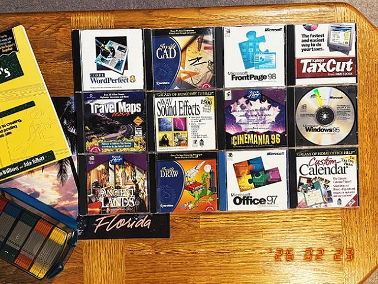
-
02/23/2026
This is my version of SimCity 2000's Lakeland in SimCity 4. This took longer than expected and I'm not entirely satisfied with it. I find it difficult to replicate SimCity 2000 layouts since later games added restrictions on zone sizes. The original Lakeland operates on a 8x8 grid, which does not work in SimCity 4 since all buildings must be directly adjacent to a road.
-
02/19/2026
I bought a brand new pack of floppy disks, $9.99 for 40 disks and a free case which is pretty cheap for Memorex. I use them for my Canon digital camera which works with floppy disks to store pictures. A single disk can hold up to 30 pictures, on par with a disposable camera but with digital convenience.
-
02/18/2026
Thinking of visiting New Mexico in the near future? Make sure to check out these video tapes. They contain critical information about tourist spots, national parks, and in-depth history of New Mexico.
-
02/16/2026
I have been looking for a new coffee maker for some time now, and I think I have found the one. Consumer Reports magazine describes the Black&Decker SmartBrew Plus DCM2500 as "Very good, with good price and features. 12cups. Long cord, w/storage. Tested model sold primarily at Kmart." I ordered it today, it should get here a week from now.
-
02/12/2026
I tried to recreate the legendary SimCity 2000 city "Lakeland" in SimCity 3000. I am not particularly happy with how it turned out. I don't know why, but it looks much better in SimCity 2000. Next week I will try to build Lakeland in SimCity 4.
-
02/12/2026
Started a new city today, not in real life but in SimCity 2000, and I am suddenly reminded of the time when SimCity 2000 came out with their Urban Renewal Kit edition which came with a futuristic tile set. This is what the buildings looked like, it's pretty cool actually.
-
02/12/2026
This my dog Jack "Parker" Russell. Parker loves to get treated and greeted first thing in the morning. He loves Pop-Tarts and long walks through the subdivision on the next block. Don't be fooled, he may look nice but he may be the biggest jerk the canine world has ever seen.
-
02/11/2026
It just occurred to me that my Windows XP HP Pavilion 533w I am using to update this page has been in service since 2002. That would make its hard drive 24 years old. I am not the original owner of this magnificent wonder of technology however I can't help but marvel at how well it was built. I use it almost daily to update this site, check my electronic mails, go online, and it shows no signs of slowing.
-
02/09/2026
I highly recommend this book to anyone who's ever wanted to build a web page. The Non-Designer's Web Book will take you through all the essentials step by step like how to build web pages with iFrames, GIFs, and tables, but also design tips that will make your web site look great. HomeSite5, which is pictured here, is a great tool to build web pages, but you can also use Netscape Composer, or FrontPage 98.
-
02/03/2026
What do these two items have in common? For some odd reason, no matter which store I go to, I always find at least one copy of You've Got Mail on VHS and the CD soundtrack to Fox's hit TV show Ally McBeal. The truth is out there.
-
01/27/2026
Dear Sally, I recently purchased a VHS copy of the Felicity pilot episode. Felicity is WB's latest Tuesday hit starring Keri Russell. Felicity Porter is a college freshman who followed her high school crush to NYU. My only wish is that it wasn't sealed so I could watch it without guilt. The picture below was taken using my floppy disk digital camera.
-
01/27/2026
Preston has loved playing on the Gamecube since he was little. This afternoon, we decided to revisit a childhood classic, and perhaps one of the worst games we ever encountered, Universal Studios. The gameplay is horrendous and makes no sense whatsoever, easily making it one of those "It's so bad, it's good" situations.
-
01/24/2026
Today is Winter Formal at my son Preston's school. He is taking his girlfriend Rylee, after which he will be bringing her over for dinner. My wife prepared a crab boil for the occasion.
-
01/21/2026
I spent some time making upgrades to my office by putting up drywall on the back wall behind my desk. I also hung wallpaper and installed wood paneling on the lower part of the wall, otherwise known as wainscoting Pictured below are the before and after.
-
01/08/2026
This new year started off on the right foot. I was the only bidder on a palette of 8 CRT TVs, winning the whole lot for $1. My son Vincent came with on the three hour drive to pick them up, and we stopped at Trader Joe's on the way home. Pictured below is an awesome Sharp VCR Combo that was part of the lot. It is in mint condition and will soon find its place in my office.
-
01/09/2026
Configuring the internet connection on Windows XP has opened so many possibilities. Not only did I set up my development environment on here, but I was also able to figure out how to install an electronic mail client. After many attempts with different softwares and email addresses, I finally got it working with OE Classic and gmail. Some people wake up and read the paper, checking my electronic mail on my personal computer running Windows XP is how I start my day. For internet browsing I use a k-meleon browser with a custom homepage I created to mirror the America Online 56K dial-up connection screen. Every link on the homepage is fully functional, down to the search bar.
-
01/08/2026
This is my first blog entry using my Windows XP PC. I got it working by downloading Git v2.10 and TortoiseGit v1.7.9 which still support Windows XP. Of course, that didn't work. While I was able to clone the repository and commit files, the push to origin would fail. I had to generate an SSH key and switch the remote URL to get it to work. All new posts will be made using Windows XP.
-
01/04/2026
A few months ago, I picked up a used fridge for my basement. While cleaning it, I became intrigued with one of the stickers on the fridge door. Upon looking it up, I found out that the sticker originated from a coffee house in Key West and decided to keep it. Fast forward to January 4th 2026, my wife and I were driving to Key West, and I had long forgotten about the sticker. About 10 minutes before arriving in Key West, I see a building from the corner of my eye that catches my attention, and it suddenlty hits me: it's the same coffee house. I immediately turned around and picked up a new sticker for the fridge.
-
12/30/2025
Today we visit the Everglades, not on a boat tour, but driving through the actual state park. Along the road are several stops with trails where tourists can walk on secured pathways and observe alligators. Here are two alligators in the wild.
-
12/29/2025
While on vacation, it is important to visit at least one laundromat. It offers a pause from an otherwise hectic schedule, and allows to plan for future activities. This laundromat was used in a scene of the movie Stiptease starring Demi Moore.
-
12/27/2025
Second day at Universal, the highlight of the day was the E.T. ride that has been opened since 1990 and has remained unchanged since. We had lunch at the Simpson's Krusty Burger.
-
12/26/2025
First day in Florida, today we go to Universal Studios and walk around my favorite part of the park: Jurassic Park. The visitor center is by far the coolest building in the park. We had lunch at Thunder Falls Terrace, which is a Jurassic Park themed restaurant. Later, I had a burger at Dino Digs.
-
12/25/2025
Just landed in Orlando, Florida. We decided to have Christmas dinner at McDonald's. However, this particular location is not your typical McDonald's. It is the largest Mcdonald's in the world. It is a 24-hour location that also serves Pizza in addition to regular food. Merry Christmas.
-
12/21/2025
We were forced to celebrate Christmas four days early since we're flying to Florida on Christmas day. Strangely enough, the kids didn't seem to mind. The whole event was videotaped on my camcorder as is tradition.
-
12/19/2025
Picked up ten Disney tapes, all sealed. I put them away in the VHS cabinet, then I hung my new Shania Twain poster.
-
12/18/2025
Today is my birthday. My wife and I went Christmas shopping, and I picked up this Gateway computer monitor as well as this America Online book, and a couple of new tapes.
-
12/15/2025
The now long abandoned Sears department store still lights up at night. Sears didn't only anchor the mall, it anchored our hearts.

-
12/13/2025
Today, I drove two and a half hours to go pick up this VHS cabinet. My son Vincent went with me, so we explored the area and stopped at Kroger for groceries.
-
12/12/2025
Played Gamecube with my son Preston today. The game pictured below is Polar Express, appropriate for this time of year.
-
12/10/2025
I've decided it's never too late to start learning about computers, so my assignment today is to watch the Microsoft Windows 95 Video Guide. Learning from Chandler and Rachel is probably easier than learning from Bill Gates himself, and this will help me stay in touch with new technologies.
-
12/09/2025
My Sim game collection.
-
12/09/2025
My collection of Stussy hats. Pictured here are 3 Stussy Electric Dot SnapBack hats with contrast stitching. The black one was famously featured on "The Secret World of Alex Mack", a Nickelodeon TV Show created in 1994 about a girl who develops super powers after getting hit by a truck full of GC-161 chemical.
-
12/08/2025
Installed new kitchen cabinets today. The off white formica / woodgrain combo makes for a nice addition to my office.
-
12/07/2025
My son Preston and I woke up early today to go pick up our Christmas tree from a nearby farm.
-
12/05/2025
My wife and I attended our son's Christmas choir concert last night, then we ordered Pizza from Gelsosomo's. A perfect night.
-
12/04/2025
Bought some Diet Coke with Lime today.
-
12/01/2025
First day of December, it is cold here in Chicago. Today also happens to be Cyber Monday which is why I have decided to update this page.
-
08/11/2025
I have a sciatica from hell, an AI certification scheduled for tomorrow, a self-assessment I need to complete by the 15th, and a ton of administrative tasks I have not yet started. Where is Bill Gates when you need him?
-
06/07/2025
I came home today and handed my wife a gift thinking it was our anniversary. That was awkward since our anniversary was actually 4 days ago.
-
06/06/2025
Today is national donut day, the one day out of the year where we put our differences aside for the good of the nation. My son Preston surprised me with a Boston Cream donut from Dunkin' Donuts.
-
06/05/2025
Went into the office today, Chicago traffic is the worst.
-
06/04/2025
Not feeling good today, this weather is depressing. Coincidently, the office coffee pot needs cleaning.
-
06/02/2025
Today was Vinny's last day of middle school which made me realize how quickly time passes. That's why I've decided to dedicate this blog to my kids, Preston and Vincent, where I will keep track of major life events. So back off Zuckerberg, this site is not for sale.
-
05/28/2025
Went to Chuck E. Cheese with my niece and nephew.
-
05/21/2025
My sister arrived today, O'Hare was a madhouse. The new office wallpaper will have to wait.
-
05/15/2025
Welcome to my blog, also known as the official webpage of my home office. You can check the progress in the gallery